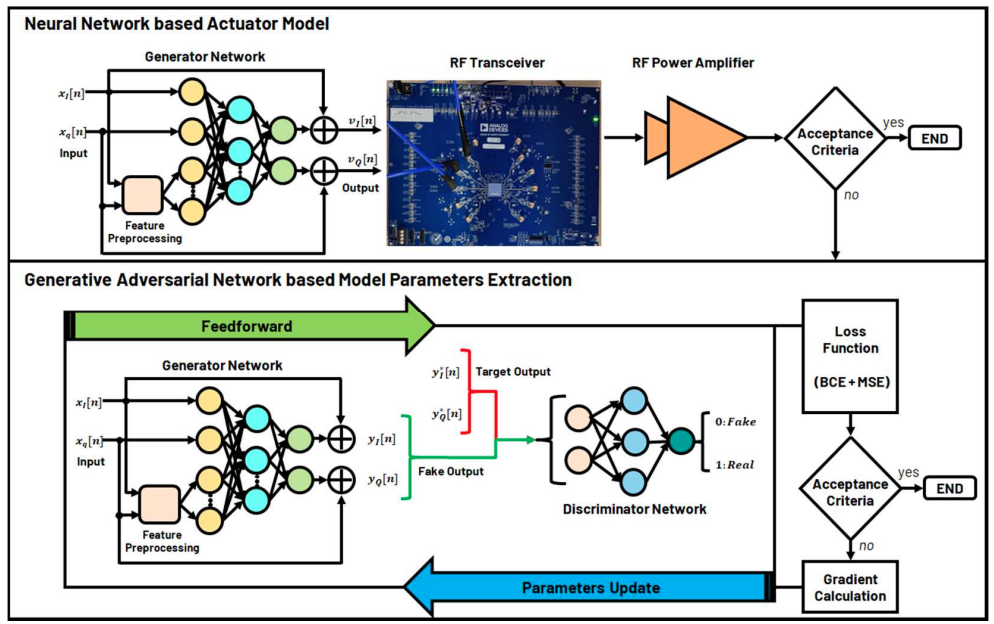

JCAS (Joint Communications and Sensing)
This research develops RF design and signal-processing methods that allow wireless systems to communicate and sense simultaneously.
Learning-based methods address key challenges in practical JCAS systems: digital predistortion mitigates transmitter nonlinearity while preserving waveform quality, and blind source separation supports channel equalization under non-ideal channel conditions. Together, these approaches advance efficient 6G hardware and reliable JCAS performance.